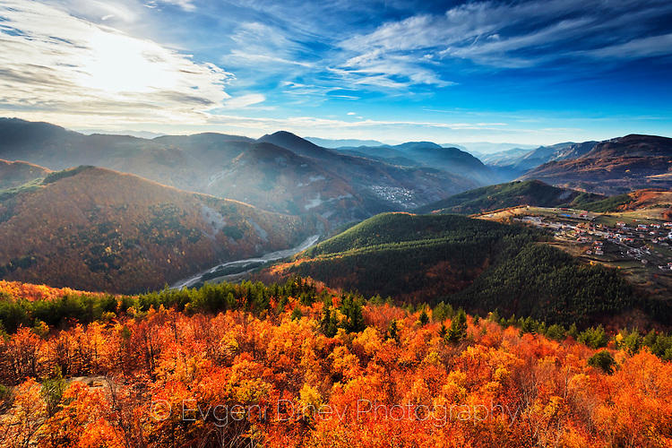

Родопите са най-лиричната българска планина, съчетала в себе си релеф с меки овални очертания, шарените “черги” на природа, одухотворена с архитектурата на живописни села, гостоприемството на хората и легендарните песни на Орфей. Над 83 % от площта ґ е на българска територия, другата част - в Гърция. Заема най-южната част от страната и е основна планинска система в Рило-Родопския масив. Чрез най-високия си връх Голям Перелик (2191 м) се нарежда на 7-о място по височина сред българските планини. Родопите нямат ясно очертан релефен скелет. Представляват огромен лабиринт от ридове с различна дължина, височина и посока, разделени от дълбоки речни долини. Планината е оставила траен отпечатък върху историческото развитие на българската нация. Днешното име се е запазило още от времето на легендарния Орфей. Наричали са я и Славееви гори, и Доспатдаг, но тези наименования не са се наложили и до нас е достигнало през вековете Родопи (Родопа). Все още не е изяснен със сигурност произходът и смисълът на това име. Някои го свързват с древната езическа богиня Родопа, други смятат, че е съставено от славянските думи “руда” и “ропа” - яма, което донякъде има основание, тъй като планината е позната от най-древни времена с рудодобива.
Родопите са една от най-старонагънатите планини у нас, като основно са съставени от гнайси, амфиболити, карст и гранит. Много интересни са карстовите райони с дълбоките речни проломи, големите пещерни образувания и своеобразните изваяни форми. Туфозният материал в Източните Родопи също е бил благодатна почва за причудлива природна скулптура - гъби, пирамиди и т.н. Липсата на заледяване е лишило планината от типичните ледникови форми.
Разположението на Родопите в югоизточната част на Балканския полуостров определя до голяма степен и климата. Той се характеризира като преходен, тъй като се влияе както от по-студените северни въздушни маси, така и от топлия полъх на Средиземноморието (Беломорието). Средната годишна температура на Източните Родопи е по-висока и по-устойчива и се движи около 12-13°С. В Западните Родопи под влиянието на по-голямата надморска височина средногодишната температура варира от 5 до 9°С. Преходният характер на климата в Родопите проличава и от годишния ход на валежите. В Източните Родопи през декември е максимумът на валежите, а през август - минимумът. В Западните Родопи - обратно, преобладават летните валежи. Мекият климат в съчетание с другите фактори благоприятстват развитето на курортното дело и туризма. Като пример може да се посочи курортът Пампорово, където микроклиматът позволява задържането до късно на дебела снежна покривка - истински рай за скиорите.